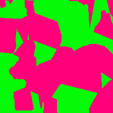
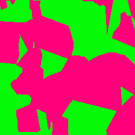

Shape Bias & Robustness
Evaluation via Cue Decomposition for Image Classification and Segmentation
Edgar Heinert1 • Thomas Gottwald1 • Annika Mütze1 • Matthias Rottmann1
1 Department of Mathematics, University of Wuppertal, Wuppertal, Germany

 

Abstract
We propose a two-step cue decomposition pipeline that separates images into their shape cues using Edge-Enhancing Diffusion and their texture cues using Voronoi patch shuffling, enabling measurement of model reliance on either cue. Building on this, we introduce:
- a unified Cue-Decomposition Shape Bias (CDSB) metric applicable to both image classification and, for the first time, semantic segmentation models, and
- a Cue-Decomposition Robustness (CDR) metric assessing model performance in the absence of shape or texture cues.
Using these AI-free, handpicking-free metrics, we conduct:
- the first CDSB and CDR evalutaiton of 43 pre-trained image classification models, and
- the first shape bias and CDR evaluation of 23 pre-trained semantic segmentation models.
Method Overview
Our pipeline first applies Edge‑Enhancing Diffusion: The PDE-based diffusion method propagates color values along edges but not across them and thus removes texture from images while preserving their shape. The resulting shape cue keeps category‑defining contours.
Next, we compute a Voronoi texture abstraction on the original image, which discards shape but preserves local texture statistics. A number of Voronoi cells are sampled and each displays a randomly chosen part of the original image.
The CDSB and CDR proposals are then chosen from a number of candidate metrics which included both additional cue-decomposition approaches as well as a number of AI-free cue-conflict-metric candidates and are compared to the established shape bias metric by Geirhos et al.
By evaluating models on shape‑only (xS) and texture‑only (xT) inputs, we can decompose the prediction confidence into distinct cues.
EED Cues


Voronoi Cues

Cue Conflict

Metrics at a Glance
Segmentation Shape‑Bias & Robustness
• [MODEL NAME] shows the strongest [...] (XXX)—
XXX pp higher than [architecture name]‑based [MODEL NAME].
• Robustness score ρ = 0.XXX predicts mIoU drops on Cityscapes‑C.
• ...
Classification Shape-Bias & Robustness
• CNNs (e.g. [MODEL NAME]) remain texture-leaning
(shape-bias < 0.XXX); [MODEL NAME] reaches 0.XXX
after fine-tuning.
• Our robustness metric correlates with [MODEL NAME] drops at r = 0.XXX—
better than mCE.
•...
Qualitative Results
Compare how each model handles shape‑only, texture‑only, and original inputs. Use the buttons to switch between models.


Resources & Links
Acknowledgments
A.M., M.R. and E.H. acknowledge support by the German Federal Ministry of Education and Research within the junior research group project “UnrEAL” (grant no. 01IS22069).
Citation
@article{Heinert2025ShapeBias,
title={Shape Bias & Robustness via Cue Decomposition},
author={Heinert, E. and Gottwald, T. and Mütze, A. and Rottmann, M.},
journal={arXiv:2503.12453},
year={2025}
}
Contact
Have questions or want to collaborate? Reach out:
- Email: heinert@uni-wuppertal.de
- GitHub Issues: open a ticket ↗